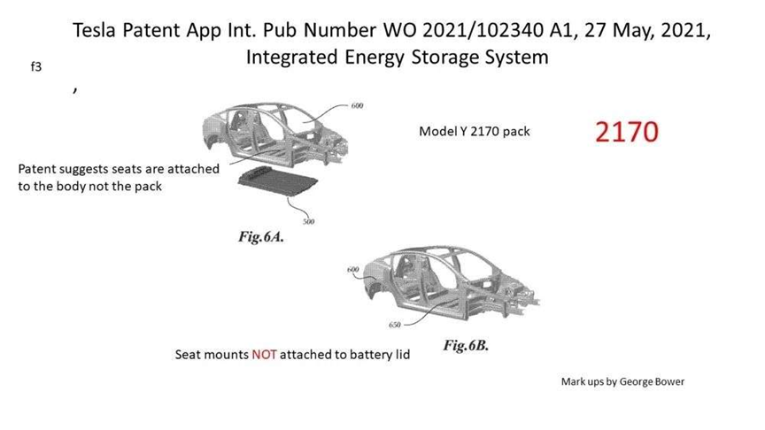
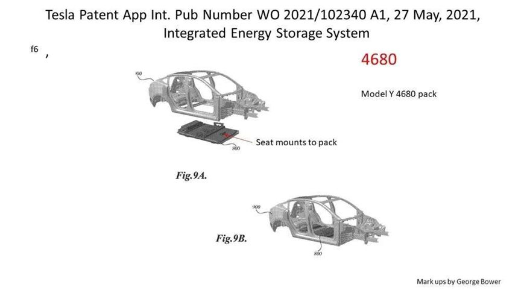
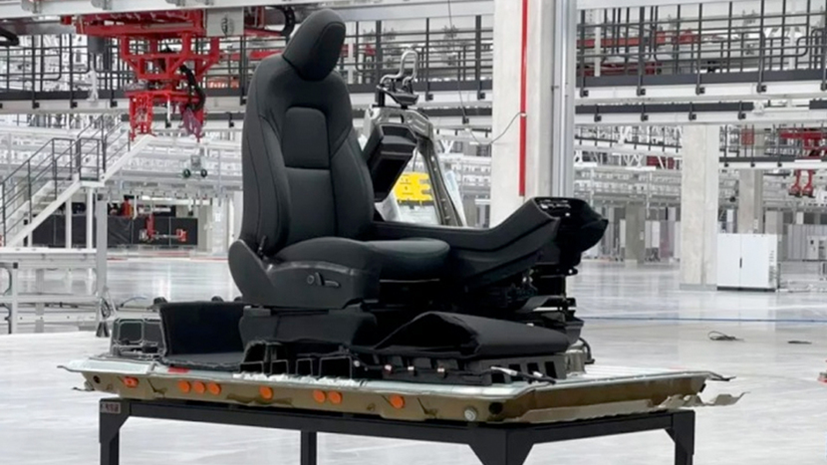
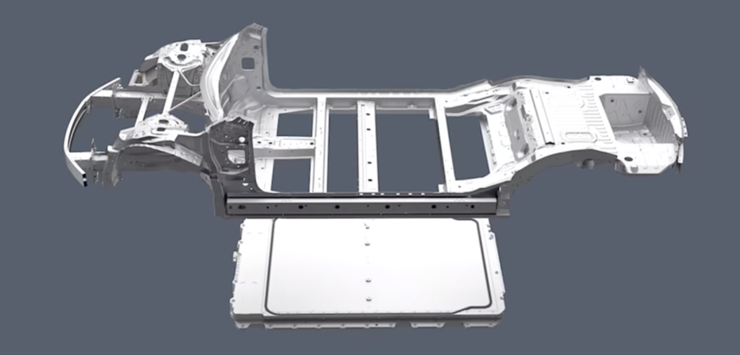

Китайский производитель электромобилей BYD выпустил свой новый автомобиль Seal для предварительного заказа 20 мая 2022 года вместе с технологией интеграции батареи в кузов CTB. Модель будет стоить от 210 000 до 290 000 юаней (31 тыс. долларов США - 43 тыс. долларов США) и будет доступна в трех вариантах: "Standard Range Edition" с комбинированным запасом хода 550 км в условиях CLTC, которая оснащена аккумуляторной батареей емкостью 61,4 кВт/ч, приводным двигателем максимальной мощностью 150 кВт, с временем разгона 7,5 с на 100 км; "Long Range Edition" с комбинированным запасом хода 700 км в условиях CLTC, с питанием от аккумуляторной батареи емкостью 82,5 кВт/ч и временем разгона 5,9 с на 100 км; и "4WD Performance Edition" с комбинированным запасом хода 650 км в условиях CLTC. Модель "4WD Performance Edition", оснащенная аккумуляторной батареей емкостью 82,5 кВт/ч и приводным двигателем с суммарной максимальной мощностью 390 кВт, разгоняется до 100 км всего за 3,8 с.
Мы проведем интересное сравнение между решениями BYD и Tesla по корпусу батареи, основываясь на информации, озвученной на презентации производителя, и патентной информации, ранее опубликованной Tesla.Решение CTB от BYD представляет собой компромисс между двумя решениями: решением Tesla 2170 и решением Tesla 4680.
Решение CTB от BYD представляет собой компромисс между двумя решениями: решением Tesla 2170 и решением Tesla 4680.
В решении Tesla 2170 элементы 2170 образуют четыре больших модуля, которые вместе образуют аккумуляторный блок, однако решение CTB от BYD полностью отличается. Вместо этого BYD напрямую упаковывает элементы Blade в один аккумуляторный блок. Метод, аналогичный решению Tesla 4680. Отказавшись от модулей, BYD упаковала больше элементов в батарейный блок той же емкости. В то же время решение CTB от BYD сохраняет дизайн решения Tesla 2170, оставляя балку пола в кузове автомобиля, вместо того, чтобы интегрировать балку пола в верхнюю часть корпуса аккумулятора, устраняя лишь нижнюю панель кузова.

Модель Y с батарейным блоком 4680 выполняет роль нижней части кузова, и даже сиденья автомобиля крепятся непосредственно к корпусу батарейного блока. Аккумуляторный блок 4680 действует как "шасси" корпуса, тем самым уменьшая количество частей корпуса и снижая потребление и вес.
Решение CTB от BYD устраняет пространство, занимаемое слоем пола кузова и модулями, обеспечивая тем самым больше места для аккумулятора. Но конструкция балки пола, остающейся в корпусе, не позволяет решению CTB от BYD превзойти решение Tesla 4680 с точки зрения места для батареи. Тем не менее, решение CTB от BYD дает больше пространства для батареи, чем решение Tesla 2170.
Предполагаем, что сверхмощный станок для литья под давлением помог Tesla изготовить сверхпрочную верхнюю оболочку аккумулятора, в то время как у BYD пока отсутствует такое оборудование. Высокая цена такого сверхмощного литейного станка должна поддерживаться огромными продажами. Возможно, уже в ближайшем будущем по мере роста продаж BYD мы увидим новое, более интегрированное решение BYD.
CTB-решение от BYD:

Итак, если мы сравним его с предыдущими решениями BYD для электромобилей, то данное решение CTB от BYD легче и обладает более высокой поперечной прочностью / жесткостью при кручении. Аккумулятор более съемный и герметичный, поэтому обслуживание батареи обходится относительно дешево, но по сравнению с решением Tesla 4680, решение BYD использует прямое воздушное охлаждение и не рассеивает тепло так, как решение жидкостного охлаждения от Tesla.
Рабочие параметры BYD Seal
1. Коэффициент использования объема аккумуляторной батареей 66% (Это число означает, сколько место освобождено от кабелей внутри аккумуляторной батареи, оставляя место для самой батареи). Для старых моделей электромобилей BYD данный показатель составляет 40%.
2. На 50% повышена безопасность конструкции при лобовом ударе; на 45% повышена безопасность при боковом ударе (по сравнению с BYD Fuel Han).
3. Удвоение жесткости при кручении транспортного средства, преодоление порога в 40 000+Н*м/°.
4. Увеличение вертикального пространства на 10 мм, сверхнизкий центр масс/ инерции, золотое соотношение нагрузки на ось 50:50 (по сравнению с BYD Han EV).
5. Высоковольтная зарядка, 15 минут на 300 км хода.
6. Подробная информация о CTB-решении BYD Seal:
Аккумуляторная батарея шасси состоит из 172 элементов напряжением 3,2 В. В батареи отсутствуют модули. Верхняя крышка аккумулятора покрыта слоем полиуретанового амортизирующего материала для уменьшения вибрации. Пространство между батарейным блоком и боковой частью корпуса очень компактное, и вместе с поперечной балкой оно повышает боковую устойчивость.


7. Боковая устойчивость - Испытание автомобилей на устойчивость во время экстремальных манёвров
Конструктивные усовершенствования BYD Seal позволили добиться потрясающей поперечной устойчивости, что для высокопроизводительного седана с ускорением от 0 до 100 км/ч за 3,8 секунды дает ощущение превосходства над конкурентами как на прямой трассе, так и на поворотах!
Давайте взглянем на результаты тестов elk между BYD Seal 4WD и Model 3 4WD 2019 (с решением 2170). Согласно официальному сайту BYD и сайту обзора автомобилей Испании “77km”, BYD Seal превзошел рекорд в 83 км/ч, установленный Model 3, со скоростью 83,5 км/ч! Это впечатляющий результат.
Аналитические выводы
Схема CTB от BYD повышает прочность кузова, делает обслуживание аккумулятора относительно простым, улучшаетходовые качества и безопасность автомобиля. Однако система прямого воздушного охлаждения делает отвод тепла менее эффективным. Не смотря на это, хотя вариант Tesla 4680 имеет небольшое преимущество, запас хода BYD Seal будет не меньше, чем у Tesla Model 3 при низких температурах, благодаря увеличенной емкости литиевых батарей.
Убийца Tesla готов к заказу!
Всем EV🙌
Команда IT-CAR.BY
Еще больше новостей и актуальных горящих предложений размещено в нашем телеграм-канале
 Китайский производитель электромобилей BYD выпустил свой новый автомобиль Seal для предварительного заказа 20 мая 2022 года вместе с технологией интеграции батареи в кузов CTB. Модель будет стоить от 210 000 до 290 000 юаней (31 тыс. долларов США - 43 тыс. долларов США) и будет доступна в трех вариантах: "Standard Range Edition" с комбинированным запасом хода 550 км в условиях CLTC, которая оснащена аккумуляторной батареей емкостью 61,4 кВт/ч, приводным двигателем максимальной мощностью 150 кВт, с временем разгона 7,5 с на 100 км; "Long Range Edition" с комбинированным запасом хода 700 км в условиях CLTC, с питанием от аккумуляторной батареи емкостью 82,5 кВт/ч и временем разгона 5,9 с на 100 км; и "4WD Performance Edition" с комбинированным запасом хода 650 км в условиях CLTC. Модель "4WD Performance Edition", оснащенная аккумуляторной батареей емкостью 82,5 кВт/ч и приводным двигателем с суммарной максимальной мощностью 390 кВт, разгоняется до 100 км всего за 3,8 с.
Китайский производитель электромобилей BYD выпустил свой новый автомобиль Seal для предварительного заказа 20 мая 2022 года вместе с технологией интеграции батареи в кузов CTB. Модель будет стоить от 210 000 до 290 000 юаней (31 тыс. долларов США - 43 тыс. долларов США) и будет доступна в трех вариантах: "Standard Range Edition" с комбинированным запасом хода 550 км в условиях CLTC, которая оснащена аккумуляторной батареей емкостью 61,4 кВт/ч, приводным двигателем максимальной мощностью 150 кВт, с временем разгона 7,5 с на 100 км; "Long Range Edition" с комбинированным запасом хода 700 км в условиях CLTC, с питанием от аккумуляторной батареи емкостью 82,5 кВт/ч и временем разгона 5,9 с на 100 км; и "4WD Performance Edition" с комбинированным запасом хода 650 км в условиях CLTC. Модель "4WD Performance Edition", оснащенная аккумуляторной батареей емкостью 82,5 кВт/ч и приводным двигателем с суммарной максимальной мощностью 390 кВт, разгоняется до 100 км всего за 3,8 с.